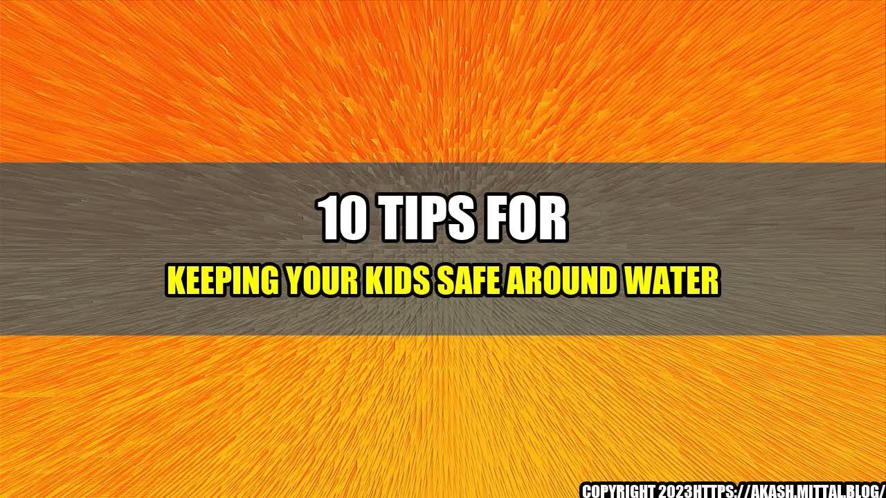

10 Tips for Keeping Your Kids Safe Around Water

When I was seven years old, my family went on vacation to the beach. I was having a great time playing in the waves, but I got a little too close to a big wave and it knocked me off my feet. Suddenly, I was underwater and couldn't breathe. I panicked and started thrashing around, but that only made things worse. Luckily, my dad saw what was happening and came to my rescue. He pulled me out of the water and I coughed and sputtered until I caught my breath. It was a scary experience, but it taught me an important lesson about water safety.
Why it's important to keep your kids safe around water
According to the CDC, drowning is the fifth leading cause of unintentional injury death in the United States, and the second leading cause of death for children ages 1 to 14. Even non-fatal drowning incidents can cause brain damage and long-term disabilities. That's why it's so important to take water safety seriously. Here are ten tips to help you keep your kids safe around water:
- Never let your children swim alone. An adult should always be present and paying attention.
- Enroll your child in swim lessons. Knowing how to swim is the best way to prevent drowning.
- Teach your child to always ask permission before going near water. This includes pools, lakes, and even bathtubs.
- Use proper flotation devices. Make sure your child wears a life jacket when boating or swimming in open water.
- Stay within arm's reach of your child when they're in the water. This means you can quickly grab them if they get into trouble.
- Enclose pools and hot tubs with fences and self-closing gates that latch. This can help prevent young children from gaining access to the water without adult supervision.
- Teach your child about the dangers of drains and suction in hot tubs and pools. Make sure they know to stay away from them.
- Take breaks from swimming every hour. This will give your child a chance to rest and hydrate.
- If your child is tired or cold, don't force them to keep swimming. Let them take a break or get out of the water.
- Learn CPR. This can be a lifesaving skill in the event of a drowning incident.
Conclusion
In conclusion, water safety is essential for children of all ages. By following these tips, you can reduce the risk of drowning and keep your kids safe while they're having fun in the water:
- Never let your children swim alone
- Enroll your child in swim lessons
- Teach your child to always ask permission before going near water
- Use proper flotation devices
- Stay within arm's reach of your child when they're in the water
- Enclose pools and hot tubs with fences and self-closing gates that latch
- Teach your child about the dangers of drains and suction in hot tubs and pools
- Take breaks from swimming every hour
- If your child is tired or cold, don't force them to keep swimming
- Learn CPR
Curated by Team Akash.Mittal.Blog
Share on Twitter Share on LinkedIn